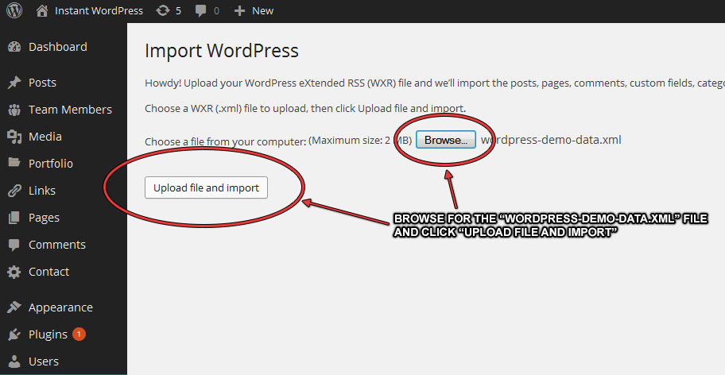

A - Introduction
Back to TopA big Thank You for purchasing RoadRunners - A One-Page Music Theme. This theme is really useful and slick if you are a musician, band member, or involved in the music business in any way.
RoadRunners comes with a plugin that manages all of your events and artists using WordPress' powerful custom post types. And there's also a few useful shortcodes in there too! This theme takes the popular "one page" approach and each section is easily managed in the Theme Options panel. I hope you enjoy working with RoadRunners and if you have any questions, requests or find any bugs, please leave a comment in the item's comment page over at themeforest.net. This is the best place because everyone can benefit. For more intensive customization feel free to send me an email. Enjoy!
Note: It should be noted that this theme does not support sub menu's for the main navigation!
Changelog: v1.2.1 - Fixed: Event options dissapeared after update. v1.2.0 - Added: WPML config files for the theme and plugin. - Added: Custom headers on a per-post basis. - Added: "target" attribute to the [button] shortcode. - Added: Currency symbol selector. - Added: Homepage Layout Sorter (Replaces current select method). - Fixed: Styling issues when a Child Theme is used. - Fixed: Some styling issues on mobile displays. v1.1.1 - Updated: Critical update to TGM Plugin Activation Class (XSS Issue). v1.1.0 - Added: Child Theme folder. - Added: More theme options available. - Added: Pagination on Artist and Event posts. - Updated: Google Fonts library. - Fixed: SoundCloud player embeds were too small. - Improved: Responsiveness. - Improved: HTML5 and CSS code/validation. - Improved: Validating/sanitizing user input/output. - Improved: Using latest WordPress functions. v1.0.5 - Fixed: Prevent horizontal scroll bar from appearing on narrow screen sizes - Fixed: Layout breaking when there are less than five events showing on the homepage - Fixed: Sub page header images are now handled via the Theme Options due to a conflict (URLs weren't saving) - Improvement: Event dates now use the date format specified under Settings > General - Improvement: Events are now ordered by event date instead of post date - Improvement: IMG tags now allowed in the "About Us" fields - Improvement: Mobile menu retracts after clicking menu links - Improvement: Google Fonts updated - Added: More options in the Theme Settings to change the text on certain labels v1.0.4 - Fixed: White space bug in webkit browsers (Chrome, Safari) - Added: More layout options for the Homepage v1.0.3 - Fixed: A few issues with sticky nav positioning on mobile displays - Improvement: CSS tweaks for mobile displays v1.0.2 - Added: A sticky navbar :) v1.0.0 - Initial Release
B - Installing WordPress
Back to TopInstalling WordPress on your web server is easy. Each web host is different but when you log in to your dashboard there's usually an option that allows you to install WordPress automatically. In the unlikely event that your web host does not have this option, you can follow this guide from the WordPress codex, which gives more detailed information on how to install WordPress on your web server, or locally on your machine.
codex.wordpress.org/Installing_WordPress
Important: Since this theme uses the latest features of WordPress, be sure to upgrade to the latest version once you have installed it. The latest version is 3.8 as of writing, though it has been thoroughly tested on 3.9 (beta).
Tip: If you would like to install WordPress locally on your machine, a really simple solution is to use Instant WordPress. you can download it from www.instantwp.com
C - Installing RoadRunners
Back to TopAfter you've installed WordPress and upgraded to the latest version (highly recommended), you are now ready to install RoadRunners. You can do this one of two ways, I'll start with the first which is the easiest;
The Quick and Easy Way
After you have downloaded the ZIP package from Themeforest, you will need to extract all the files first. If your computer does not have any tools to do this, you can use WinZip, 7-Zip, or WinAce.
Next, log in to your WordPress dashboard and navigate your way to the Themes page:
Now click on "Add New Theme":
This will take you to the "Install Themes" page. From here, click on Upload:
You can now browse your computer and find where you extracted the download package. You will need to find and select the file "roadrunners-theme.zip". (It needs to be the ZIP file and NOT the folder) and then click on "Install Now":
From here you will have a choice to either return to the Dashboard, or Preview your site with the new your theme installed. If you choose "preview", you can customize some of the settings such as the background colour or background image. If you choose to do this, make sure you activate the theme by clicking on "save".
If you are using WordPress 3.9, it is now possible to manage your widgets in the preview too!
And that's it! RoadRunners should now be installed on your WordPress site. If, for some reason, you are having difficulties, there is an alternative way...
The Alternative Way
Along with the ZIP file of the theme, there is also an unzipped version which is a stand alone folder named "roadrunners". If you have access to your web server via an FTP client such as FileZilla, you can upload the "roadrunners" theme folder directly. All you need to do is upload the folder into the "themes" directory. The path to the themes directory is usually as follows:
http://www.yoursite.com/wordpress/wp-content/themes/
Once you have done this, you can proceed through the step below to activate the theme.
D - Creating a Child Theme
Back to TopNote that as of V1.1.0, a child theme now comes with the main theme and can be found inside the download package!
If you plan on modifying any of the code for RoadRunners once you've installed it, it's always a good idea to create a "Child Theme" to work with instead. If you work with the theme directly and decide to modify any of its code, then when a newer version of the theme is released, all of your changes will be overwritten. Below is a brief example of how you begin this process
Inside this new folder, create a new file called style.css. This is the only file required to make a Child Theme. Within this new CSS file, you will need to have the following code:
Now all of your changes in this file will override the original stylesheets from the parent theme. The same rule applys to any of the files you need to change. Simply create a new file of the same name and edit away! There are more detailed instructions on how to create a Child Theme over at the WordPress codex.
E - Custom Header & Background
Back to TopAs well as a Theme Options panel, RoadRunners also supports some of WordPress' extra customization features, like the background customizer. You can edit this by going into the WordPress dashboard, and navigating to the Appearance side menu.
From here you can change the background and also choose to have a colour or image for the main body's background.
Note: The Header Image is now configurable in the Theme Options panel.
F - Installing the Plugins
Back to TopThere are some Plugins you can install that will extend the use of the RoadRunners theme. One of them was included in the download package when you bought the theme (roadrunners-plugin.zip), and the the other two are optional plugins: The Breadcrumbs Plugin by Justin Tadlock, and Contact Form 7 by Takayuki Miyoshi. When you installed the theme, you will have been prompted to install these plugins. You can then let the theme install these plugins for you, or you can install them yourself as described below.
RoadRunners Plugin
This Plugin lets you create and manage your events and artists, and also has a small selection of useful shortcodes to use (more on this below).
Installing a plugin is very similar to installing a theme. You simply need to upload the plugin in a ZIP format; From the WordPress dashboard, navigate your way to the plugins page and click on "add new":
In the same directory as the theme's ZIP file, you will have noticed the "roadrunners-plugin.zip" file. This is the file you need to upload. Again, this is very similar to the way you installed the theme:
As mentioned earlier, the theme itself will prompt you to install these plugins so you shouldn't need to worry about doing it manually. If you do, you can repeat these steps for the other plugins, but instead of uploading them, you'll need to do a search. Search for "breadcrumb trail" and "contact form 7" and you'll be able to install them directly from the WordPress Plugin Repository. When you have all plugins downloaded and installed. Make sure you activate them!
To confirm that you have the plugins installed and working porperly, you should have these extra menu items in the sidebar on your WordPress admin dashboard.
All your plugins are ready to go! And don't forget, if you ever wanted to change themes, you can take all of the plugin content with you. Thats the great thing about using plugins! Don't forget, the above plugins are only meant to enhance your experience, you don't need them for the theme to function properly. More information about how to use these plugins are described further down this document.
G - Importing Demo Data
Back to TopIf you liked the demo site for RoadRunners, you'll be pleased to know that the data is available as an XML file for you to import into your WordPress site. This can be found in the "demo-data" folder along with a text file that has all the theme options data too. This is a brief guide on how to import the data. Before we start, it is important to note that you should install all of the recommended plugins in order to get all of the data. Also, the images have been replaced with dummy images for licensing reasons. If you would like these images, they can be purchased from photodune.net
First, go to your WordPress dashboard and navigate your way to the Tools -> Import page from the side menu. On this page, there is an option for you to import content from another system. Click on the WordPress option:
Now all you need to do is click on "Browse" and find the file named "wordpress-demo-data.xml" then click on "Upload File and Import". Be sure to check the box that says "Download Attachments". The process may take a little while, so go and make yourself a cup of tea :)
All of the demo posts and pages should now be available in addition to the content you already have on your site. Now we just need to import the theme options data. To do this, return to your WordPress dashboard and navigate to the Theme Options page and go to the Import and Export menu:
As stated in the screenshot above, enter all the text from the "roadrunners-options-data.txt" file (this is in the same folder as the "wordpress-demo-data.xml" file) and click the "Import Options" button. The text you see will look like gibberish, thats okay it just means that its encoded.
H - Managing Your Events & Artists
Back to TopThe RoadRunners Plugin provides you with two extra post types, one for Events and one for Artists. The Events post type lets you store information like venues, event dates, and a map to display the location. Instead of categories, you have event types which could include festivals, charity gigs and so on. With the Artists post type you can store information relating to individual musicians or bands. This information could include a list of albums and upcoming albums. You can organise these into different music genres too, like Rock, Jazz, or Metal.
If you are already familiar with writing posts in WordPress, then adding Events and Artists is almost exactly the same. The only real difference is that your Events and Artists have a few optional extra fields to fill in, such as a date or venue for Events, and discography or upcoming albums for Artists. This information is displayed on the front end whenever a user visits an Event or Artist.
Events Fields
These are the extra fields that are available for the Events custom post type. As you can see, they are all pretty self explanetory. The only thing to note, is the map location field. This must be an iFrame generated by Google Maps or something similar. The width and height attributes doesn't matter as the theme will resize the frame to fit its container.
Artists Fields
These are the extra fields that are available for the Artists custom post type. These are also straightforward, and you can even use some basic HTML like in the screenshot above.
I - Using the Shortcodes
Back to TopWith the RoadRunners Plugin activated, you will also be able to use some shortcodes when editing posts and pages. Below, you will find a full list of all available shortcodes along with their usage and purpose.
Although you can use these shortcodes in any theme, they may look different due to the theme's styling.
Column Shortcodes
These will allow you arrange your content into columns. There are many perameters you can use to control the layout not just on desktop, but for Mobile and Tablet displays. Example usage:
[col grid="50"] Your content... [/col]
The example above will create a column that is 50% the width of it's parent container. You can specify the percentage in increments of five (e.g. 25, 30, 35, 75 etc.) or, if you need a column that takes up a third of it's parent, you can use 33, or 66 for two thirds. Here's a more advanced example:
[col grid="25" tgrid="50" mgrid="100"] Your Content... [/col]
This will display the column at twenty five percent on a desktop display, fifty percent (half) on a Tablet display and one hundred percent (full) on a Mobile display. you can also hide columns on specific devices like so:
[col grid="100" thide="true" mhide="true"] Your Content... [/col]
This will simply hide the content when viewed on a Tablet and Mobile device. There are many more ways to display columns including using "Prefix" and "Suffix" which are the equivilant to using empty columns. Here's an example:
[col pre="25" col="50" suf="25"] Your Content... [/col]
This example will create an empty column that is twenty five percent (one quarter) wide, followed by a column that is fifty percent (one half) wide which will have all of your content in, followed by another empty column that is another twenty five percent (one quarter) in width. You may have noticed that this adds up to one hundred percent. This is important to remember when laying out your columns so that everything flows nicely together down the page.
Remember: pre will create empty space before the main column, and suf will create empty space after.
There are a few more paremeters you can use to give you even more control. dfirst will specify the first column in a row when displayed on a desktop, and remove any left padding, keeping the column vertically aligned with the left side of the page. You can also use this method for "nested" columns. Likewise dlast will remove the right padding. More control is given for this for Tablet and Mobile displays by using tfirst and mfirst as well as tlast and mlast respectively.
Here is a complete list of available perameters and their possible values:
- grid - 5, 10, 15, 20, 25, 30, 35, 40, 45, 50, 55, 60, 65, 70, 75, 80, 85, 90, 95, 100, 33, 66
- tgrid - 5, 10, 15, 20, 25, 30, 35, 40, 45, 50, 55, 60, 65, 70, 75, 80, 85, 90, 95, 100, 33, 66
- mgrid - 5, 10, 15, 20, 25, 30, 35, 40, 45, 50, 55, 60, 65, 70, 75, 80, 85, 90, 95, 100, 33, 66
- pre - 5, 10, 15, 20, 25, 30, 35, 40, 45, 50, 55, 60, 65, 70, 75, 80, 85, 90, 95, 100, 33, 66
- suf - 5, 10, 15, 20, 25, 30, 35, 40, 45, 50, 55, 60, 65, 70, 75, 80, 85, 90, 95, 100, 33, 66
- dfirst - true, false
- tfirst - true, false
- mfirst - true, false
- dlast - true, false
- tlast - true, false
- mlast - true, false
- dhide - true, false
- thide - true, false
- mhide - true, false
Button Shortcodes
There is a simple button shortcode available to use should you wish to link to a specific article, page or use for an external link. Here's a basic example:
[button] Your Content... (this is usually the button's label) [/button]
Between the opening and closing tags, you would normally put the button's label (e.g. "View Post"). Here is a more advanced example:
[button url="http://www.eaxmapleurl.com"] Your Content... (this is usually the button's label) [/button]
This example will link to the URL specified in the url peramemter. Here are the complete list of perameters and their possible values:
- url - URL path (i.e. a web address)
Accordion Shortcode
This shortcode will allow you to display multiple accordions on one page. There is also the option to make it into a toggle instead. Here's an example:
[acc title="Accordion Title" open="true" type="toggle"] Your Content Here... [/acc]
This example will turn the "toggle" mode on and also make it "open" by default. The parameters and values are as follows:
- title - Any string
- open - true, false
- type - toggle (leave blank for default behaviour)
Tabs Shortcodes
Tabs need to be grouped together in order to work properly, so this shortcode is a little more complicated. Take this example:
[tabs names="tab1:tab2:tab3"] [tab name="tab1"] Content for Tab One... [/tab] [tab name="tab2"] Content for Tab Two... [/tab] [tab name="tab3"] Content for Tab Three... [/tab] [/tabs]
The above code will generate three tabbed areas (tab1, tab2 and tab3), the main thing you need to remember here is that the names in the names parameter matches those in each "tab" name and that the names are seperated by a semi-colon (:).
J - The Theme Options Panel
Back to TopThe theme options page is where you will want to be if you wish to edit the main home page of the site. All of the options for each section can be customized here, but first things first, the theme options can be found under Appearance -> Theme Options.
Each of the options have a basic explanation about them and how to use them, but here is a brief list of what can be configured:
- The Main Headings in each section
- Background Images for certain sections
- The Content for each section
- Upload images for the Gallery
- Homepage logo and Taglines
- Homepage layout options
- Testimonials
- Contact Section
- Navigation menu names
- Footer Text
- Google Analytics Code
- Favicons
- Social Icons
- Google Font Settings
- Import and Export
There are brief explanations about each part of the site you want to customize at the beginning of each section in the theme options page, so be sure to read those when changing options.
K - Using the Custom Contact Widget
Back to TopThis Widget will display some introductory text, much like WordPress' text Widget, followed by some contact details including and address, phone number and email address. Simply visit the Widgets page and drag/edit it like you would any other WordPress widget :)
L - Adding a Contact Form
Back to TopRoadRunners is compatible with the Contact Form 7 plugin for when you need to add a functional contact form to the main homepage. In order to use this plugin, you must first install it. There are details on how to do this further up the page in the "Install Plugins" section.
You may notice that adding a contact form is again, very similar to adding a normal post. Firstly, navigate your way to the "Contact" page and you'll see that there is a demo contact form already available. You can either modify this, or create an entirely new one. It's completely up to you:
The following screenshot is a form that I built myself for the Demo site of this theme. As you can see, you can combine a mixture of HTML and the tags that are specific to each of the forms fields. To learn more about the tags and how to configure your contact form, please visit the plugins documentation page. Once you have configured your form, simply copy and paste the shortcode into the Contact section of the Theme Options page (the field that says "Contact Form 7 Shortcode").
M - Sources & Credits
Back to TopCSS, Javascript and jQuery Plugins
- Easing - (Visit Site)
- Fitvids - (Visit Site)
- Formalize - (Visit Site)
- Slimbox 2 - (Visit Site)
- Font Awesome - (Visit Site)
- Animate - (Visit Site)
- Lettering - (Visit Site)
- Textillate - (Visit Site)
- Scroll Reveal - (Visit Site)
- Unsemantic Grid - (Visit Site)
Options Framework
- Slighly Modified Options Framework (SMOF) - (Visit Site)
WordPress Plugins
- Breadcrumb Trail - by Justin Tadlock
- Contact Form 7 - by Takayuki Miyoshi
Images
Please note that all of the images used in the Demo site are NOT included within the download package. These can be purchased individually from Photodune.